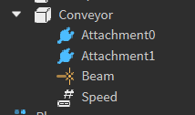
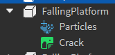
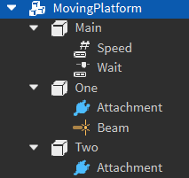
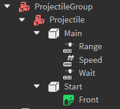
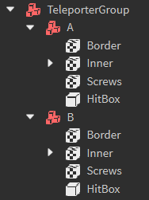

Conveyor
Conveyors are a part that moves the player along with them, like a conveyor belt. They are a normal Part with a beam particle and an IntValue parented to them.
The IntValue is used to control the speed of the conveyor. The higher the value, the faster the conveyor goes.
Requirements: - The beam particle must be the one that's provided in the example below. Custom beam particles are not allowed at this time. - The conveyor must have a tag of "Conveyor"
Rig:

Example : ExampleConveyor.rbxm
Damage part
Damage parts are a normal BasePart that deals damage to a player if their hitbox comes into contact with it.
Requirements:
- The damage part must have a tag of "DamagePart"
- The damage part must not have any textures applied to it, the animated damage textures will be added at runtime by the game
- The damage part must have a transparency of 0
- The damage part must have a material of Neon
Example : ExampleLava.rbxm
Disappearing platforms
Disappearing platforms are a Model containing numbered sub-models, which contain sets of Parts that disappear and reappear in an ordered sequence, with a NumberValue parented to the root which controls the delay between appearing and disappearing.
Rig:

Requirements:
- The disappearing platform sequence must have a tag of "DisappearingPlatforms"
- The disappearing platform sequence must contain at least one sequence model
- The platform parts cannot have any textures applied to them, the textures will be applied at runtime by the game
- The platform parts must have a partshape of Block
Example : ExampleDisappearingPlatforms.rbxm
Falling platforms
Falling platforms are a Part with a beam particle and a crack decal that shakes & falls upon being stepped on by a player with a particle and texture parented to them. The delay before falling & speed of the fall cannot be custom-defined at this time.
Rig:

Requirements: - The falling platform must have a tag of "FallingPlatform" - The texture & particles must be the ones that are provided in the example below. Custom particles & crack textures are not allowed at this time. - The particle must match the color of the falling platform. - Falling platforms must be anchored - Falling platforms cannot be moved (e.g. they cannot be a projectile)
Example : ExampleFallingPlatforms.rbxm
Moving platforms
Moving platforms are a Model containing a Part that moves between two node Parts. The main platform part contains an IntValue to control the platform's speed, and a NumberValue to control the delay between move.
Rig:

Requirements: - The moving platform's model must have a tag of "MovingPlatform" - The two node parts must be anchored and invisible - The two node parts cannot move (e.g. they cannot be a projectile) - The primary platform part must be anchored, it will be unanchored at runtime by the game - The primary platform cannot be moved by another obstacle (e.g. they cannot be a projectile) - The beam particle from the example must be present in the model and linking the two nodes together - The first node part must be named "One" - The second node part must be named "Two"
Example : ExampleMovingPlatforms.rbxm
Projectiles
Projectiles are a Model containing sub-models, which contain a BasePart that is created at a point, and then translated away in a specific direction at a certain speed for some time. The delay before firing, the projectile speed and how far it goes (in studs) are determined by NumberValue instances parented to the primary projectile part.
Rig:

Requirements: - The projectilegroup model must have a tag of "ProjectileGroup" - The projectiles inside of the projectilegroup model must have a BasePart named "Start". This part must be anchored and must be CFramed to face the direction you want the projectile to move in. - The projectile must be named "Main" - The projectile must be anchored
Example : ExampleProjectiles.rbxm
Spinners
Spinners are a Model containing a physics assembly that relies on HingeConstraints to keep the assembly together & spinning. Unlike most obstacles, spinners have no structure requirements, other than the root being a model, and there being at least one HingeConstraint existing as a descendent of the model.
Requirements: - The spinner's model must have a tag of "SpinnerRig"
Example : ExampleSpinners.rbxm
Switch panels
Switch panels are a Model with a PrimaryPart, which contains a HingeConstraint to flip its associated physics assembly back and forth when a player performs a singlejump.
Requirements: - Custom switch panels are not allowed at this time. The switch panel from the creator's kit must be used.
Example : ExampleSwitchPanel.rbxm
Teleporter group
Teleporter groups are a Model containing a set of sub-models that represent nodes in the teleporter group.
Nodes have different modes that can be configured with attributes. The two modes are Sender and Receiver.
If a node is configured as a Sender, it must have an additional attribute named DestinationName. The DestinationName's value must exactly match the name of another node model in the teleportergroup. Upon being touched by a player, the player will be teleported to the destination node.
If a node is configured as a Receiver, it will simply do nothing upon being touched by a player.
Two-way teleports are supported. If a Sender sends the player to another Sender, the receiving sender will be disabled until the player steps off of the node.
Rig:

Requirements: - Teleporter nodes must be copied from the creator's kit. Custom-built teleporter nodes are not allowed at this time. - Teleporter nodes must be anchored - Teleporter nodes cannot move (e.g. they cannot be a projectile)
Example : ExampleTeleporterGroup.rbxm
Trampolines
Trampolines are a BasePart that bounces the player upwards upon being stepped on. The height that the player is bounced is configured by a IntValue parented to the trampoline's part.
Rig:

Requirements: - Trampolines must be copied from the creator's kit. Custom trampoline shapes / models are not allowed at this time
Example : ExampleTrampoline.rbxm